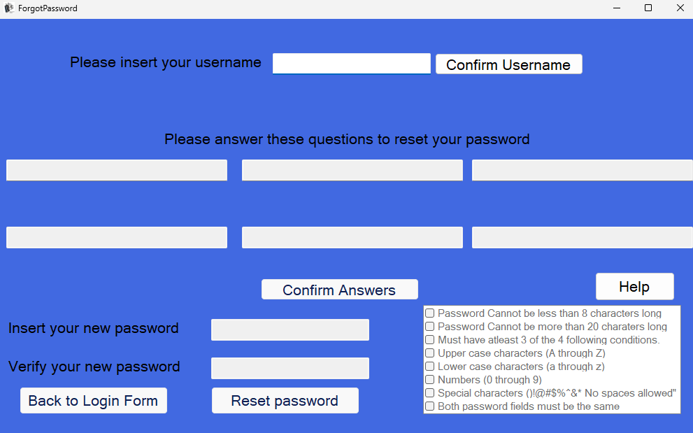
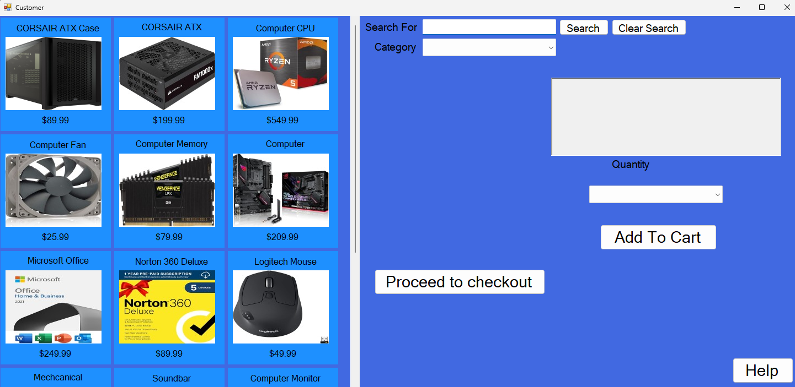
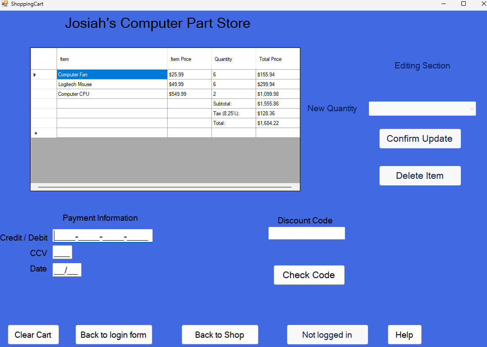

Josiah's Computer Part Store
This page is for explaining my project "Josiah's Computer Part Store". To begin, Lets explore the Create account form!
Create Form

The create account form allows users to sign up for an account with the store. Entering information such as name, email, password, address, phone number and much more allows users to create an account and start shopping for computer. parts. The form also includes a checkbox list for various requirements to create an account, such as making sure the username is unique and the password is strong enough and complex enough. The form also includes a submit button to create the account and a reset button to clear all the fields in the form. Overall, the create account form is an essential part of the store as it allows users to create an account and start shopping for computer parts.
Forgot Form

The forgot password form is for customers who have registered but have forgotten their password. The form allows users to enter their username and then answer all three security questions to verify their identity. Once the user has successfully answered the questions they are able to enter a new password and confirm the new password, following the guidelines shows for a strong, complex password. Overall, the forgot password form is an essential part of the store as it allows users to reset their password and regain access to their account if they have forgotten it.
Shopping Form

The shopping form is where users can browse and select computer parts to add to their cart. Users can select items to see a description of the item, the price, and an image of the item. Users can also select the quantity of the item they want to purchase and add it to their cart. The form also includes a search bar for users to search for specific items and a filter option to narrow down the search results between things like what kind of item it is (Hardware, software, or external devices) or searching parts of the names. Overall, the shopping form is an essential part of the store as it allows users to browse and select computer parts to add to their cart and make a purchase.
Cart Form

The cart form is where users can view the items they have added to their cart and proceed to checkout. The form displays the items in the cart, the quantity of each item, the price of each item, and the total price of the items in the cart. Users can also update the quantity of each item or remove items from the cart as well as enter discount codes. The form also includes a checkout button that takes the credit card information entered and creates an order that is entered into the database, as well as opening a recipt for the uesr. Overall, the cart form is an essential part of the store as it allows users to view and manage the items in their cart before proceeding to checkout.